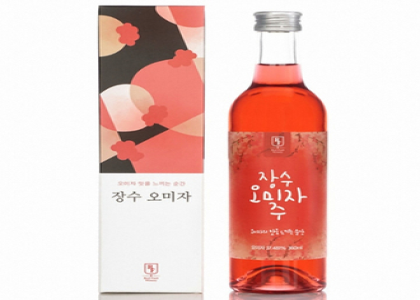

-
장수 지역은 일교차가 심해 사과의 당도가 높고 육질이 단단하며 착색이 뛰어난 것이 특징이다.
장수사과는 저장성이 우수하며 농약을 거의 사용하지 않은 청정한 상태의 과일을 제공하고 있다.
재배 시 축분 발효액비를 사용을 하여 화학비료 사용량을 1/2로 감소시켰으며, 품질의 우수성을 인정받아 2002년도부터 대만에 수출을 해오고 있다.
-

장수 오미자는 전국 최초로 대량인공재배가 1979년 성공하면서 장수군에서 생산한 오미자 실생묘가 전국에 보급되어 전국 오미자 생산량이 급속히 증가하고 있다.
장수 오미자주는 오미자의 5가지 맛(신만, 쓴맛, 매운맛, 단맛, 짠맛)을 그대로 살려내는 것을 목표로 30년이 넘는 발효 경력을 지닌 전문가와
더욱 감각적인 생산을 위해 젊은 양조인들이 양조에 참여하였다.
-
장수는 원래 넓은 초원에서 말을 키웠으나 세월이 흘러 자연환경과 목축 노하우를 소에 적용하여 최고의 품질과 맛 좋은 한우를 선보이고 있다.
고랭지 초원에서 자란 장수 한우는 최고의 맛으로 명성을 얻게 되었다.
장수는 대표적으로 '한우랑 사과랑 축제'도 해마다 열리고 있다.